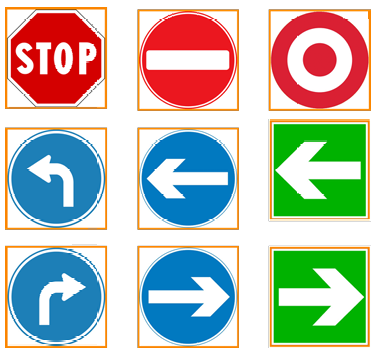
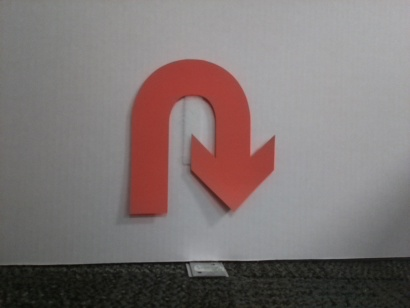

KNN Vision Classifier for Robotics
For a lab project as part of my Robotics Master's degree at Georgia Institute of Technology, an algorithm was developed to classify signs used for an autonomous maze navigation project. To do this, a K-Nearest Neighbors (KNN) model was developed with OpenCV due to its simplicity and effectiveness for small-to-medium-sized datasets. The model was trained on signs that looked like the following.

KNN is a supervised learning algorithm that classifies new data points based on their similarity to previously seen examples. Rather than learning an explicit model, KNN stores all training data and, during inference, compares a new input to its k closest neighbors in feature space. The predicted class is determined by the most common label among these neighbors. In this project, a value of k = 1 was chosen, meaning each image is classified based on its single most similar training example.
This project had two main scripts: a training script for generating the KNN model and an image classifier script for evaluating and deploying the trained model.
The training script builds the classifier from labeled image data. Each image undergoes preprocessing to isolate the sign using HSV-based color segmentation for red, blue, and green regions. Morphological operations (erosion and dilation) reduce noise, and the image is cropped to the detected sign region to make inference easier. The result is resized to a fixed resolution (33×25) and flattened into a feature vector. These vectors are paired with labels and used to train the KNN model, which is then saved for later use.
The image classifier script loads the trained model and applies the same preprocessing pipeline to unseen test images. Each processed image is converted into a feature vector and passed into the KNN classifier, where it is compared against stored training examples to determine the closest match. The script evaluates performance by computing classification accuracy and generating a confusion matrix, with optional debug visualization for intermediate processing steps.
This image classifier, once verified, was plugged into the autonomous maze navigation project to assist in getting the physical robot to its goal destination.

- Computer vision (image preprocessing and classification)
- K-Nearest Neighbors (KNN) algorithm
- Supervised machine learning
- Model evaluation and validation
- Hyperparameter tuning (k-value selection)
- Dataset generalization and cross-validation
- Python scripting and CLI-based tools
- OpenCV, NumPy, and data handling
Current Location
North of Atlanta, GAUnited States of America